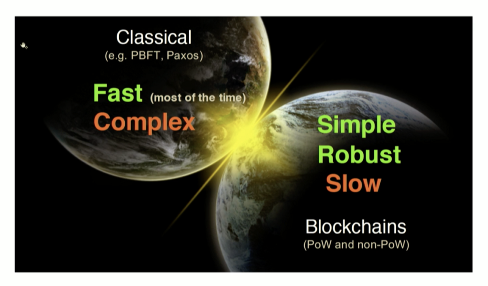

MY BLOG
Welcome to the blog of Blockchain

Avalanche BFT
Article, March 16, 2020
Avalanche is new family of consensus protocol. It is a leaderless in nature and very scalable. Avalanche could be the world cryptocurrency protocol.

Introduction to Distributed Consensus
Article, Jan 23, 2020
A short introduction for distributed consensus.

Thunderella: Blockchains with Optimistic Instant Confirmation
Paper Review, Jan 23, 2020
The main feature that Thunderella relies on is responsiveness with an optimistic assumption that most of the players are honest.
Ethereum System
Tutorial, Jan 19, 2020
This article will be around a general concepts of Ethereum, programming aspects, and smart contract in Ethereum ecosystem.

PAXI Framework
Tutorial, Jan 16, 2020
PAXI framework is a Peer-to-Peer network system that mainly developed by Ailidani a former Ph.D. student at SUNY-Buffalo. Paxi framework is for evaluating consensus protocols under a common environment.

State Machine Replication
Tutorial, Jan 14, 2020
State Machine Replication is a powerful and general method from the 80s to implement fault-tolerant services in distributed systems. In this post, I will review the approach in detail.

A Collection of Distributed System Consensus Surveys
Survey Papers, Jan 13, 2020
In this post, I will provide an overview of surveys papers that have published in consensus protocols.

BITCOIN
Bitcoin System, April 7, 2019
The main paper in the Bitcoin system is known as the Satoshi Nakamoto paper. Wikipedia's page has all of the details about the author. The paper is highly condensed and presents an incredible feat of solving highly complex problems. Recently, I believe that Bitcoin is not a good solution because most transactions are controlled by centralized data centers or by miners.

Zyzzyva BFT
Zyzzyva paper, Dec 20, 2019
This paper is known as the Zyzzyva paper. The first author is Ramakrishna Kotla . The paper is the first paper in my knowledge that has moved the commit phase to the client-side. The paper has followed up technical report which I will explain in another blog.

A Comparison between HotStuff & Tendermint BFT
A comparison paper, Dec 29, 2019
In this article, I explain in details the similarities and differences between HotStuff and Tendermint blockchain consensus protocols.

HotStuff: BFT Consensus in the Lens of Blockchain
paper summary, Dec 31, 2019
This paper is built around a framework to bridge classical BFT and blockchain and is known as a HotSuff paper. Maofan Yin is the author of the paper, and he claims that reducing the communication cost of the view-change protocol to the linear cost provides a responsiveness feature after reaching GST.

PBFT: Practical Byzantine Fault Tolerance
paper summary, Jan 04, 2020
This paper had published in 1999. It is the first paper that solved the Byzantine fault problem with practical assumptions. The paper is considered to be the main paper in Byzantine consensus protocols. Every other paper is a variant of PBFT.
My Name is Salem Alqahtani
I write a blog about research ideas, paper summaries, technical and coding issues that are related to my interest. Home Page
Popular Posts
-
Avalanche
Paper Review -

Thunderella
Paper Review -
Ethereum System
Tutorial -
PAXI
Tutorial -
Blockchain Surveys
Previous Work -
State Machine Replication
Tutorial -
Survey
Survey -
BITCOIN
Paper Review -
Zyzzyva
Paper Review -
Comparing Hotstuff & Tendermint
Article -
HotSuff
Paper Review -
PBFT
Paper Review
Tags
Reading Review Analysis